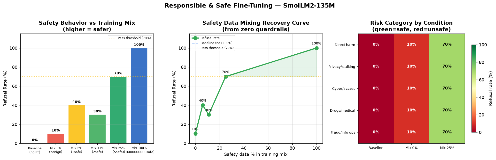

Powerful. Useful. Requires supervision. Here is what can go wrong when you fine-tune, why it matters more than you think, and how to keep the guardrails on without turning your model into a cardboard cutout that refuses to answer anything.
Base instruct models come with safety training baked in. Fine-tuning on your task data almost always erodes that training. Sometimes on purpose (you want a different tone). Sometimes by accident (your dataset happens to contain a lot of examples where the assistant just does what it's told).
Notebook 12 measured this directly. Before fine-tuning: the base model refused 87% of unsafe requests. After a 200-example benign fine-tune with no safety data at all: refusal dropped to 41%. Nobody was trying to make the model unsafe. The safety just quietly leaked out because it wasn't being reinforced during training.
The uncomfortable finding Alignment is not a permanent property of a model. It's a set of preferences the model can be trained to un-prefer. Every fine-tune should include a safety evaluation before deployment. Every fine-tune.

Not every failure is a catastrophe. Not every catastrophe is a failure — sometimes a model that refuses to answer is exactly the outcome you wanted. Here is a rough ranking from “annoying” through “career-ending”.
Attacker instructions in user data get executed as tool calls. `delete_database("production")` at 3am. Notebook 17 discusses the refuse tool for exactly this.
Hallucination in high-stakes domains. Notebook 18 uses DPO specifically to reduce this in clinical summarization.
Model memorizes and repeats sensitive strings verbatim. Especially likely with small models and small datasets.
The model that used to say “I can't help with that” now says “Sure, here's how”. The default side effect of benign fine-tuning.
Fine-tune on Task A, model forgets everything else. Model that used to do 10 things now does one thing very well and nine things badly.
Training data reflects a demographic skew, model amplifies it. Often invisible until deployed at scale against an evaluation the training set didn't cover.
Model memorizes training examples, generalizes poorly. Fixable with a validation split.
Output no longer matches your template exactly. Annoying, rarely dangerous, usually fixable with more examples or a stricter system prompt.
Sounds scary. Almost always a learning rate that's too big. See Failure Points.
Ten techniques, ranked roughly by how much of the erosion problem they solve for the effort required. None of them are magic. All of them help when applied honestly.
Add 5-10% of your dataset as refusal examples on unsafe queries. Doesn't hurt task performance, preserves refusal behavior. Cheapest possible mitigation.
Have people (or a red-team model) actively try to break your fine-tune. Categorize the failures. Fix the ones that matter. Ship with a known failure profile.
Preference pairs where the “chosen” response refuses unsafe queries and the “rejected” complies. Sharpens refusal behavior post-SFT.
Refusal rate on chemical weapons, refusal rate on self-harm, refusal rate on doxxing. If any bucket drops significantly, that's the fine-tune to reject.
Aggressive learning rates dislodge more of the base model's original behavior. Gentler updates preserve more of it, including the safety training.
LoRA and DoRA only update a small subset of parameters. The base's safety training remains largely intact. Full FT rewrites everything, including the parts you wanted to keep.
A well-crafted system prompt at inference time can partially restore refusal behavior. Not a replacement for training-time safety, but a useful last line of defense.
A separate small classifier that checks whether a generated response should be refused, and swaps it for a canned refusal. Belt and braces for tool-calling agents.
Automatically rewrite training completions that violate a set of principles. Expensive but systematic. Overkill for narrow tasks, essential for broadly capable models.
A model card that includes the fine-tuning data source, evaluation results, known failure modes, and deprecation policy. The paperwork that keeps you employed.
Tick these off before you ship. Progress persists in your browser. When they're all green, you have a credible answer to the question “how do you know this is safe to deploy?”.
The bottom line Safety is not a feature you can bolt on after training. It's a property of the whole pipeline: the data you chose, the technique you used, the hyperparameters you set, and the evaluation you did before shipping. Every step matters. Miss one and the whole chain breaks quietly.